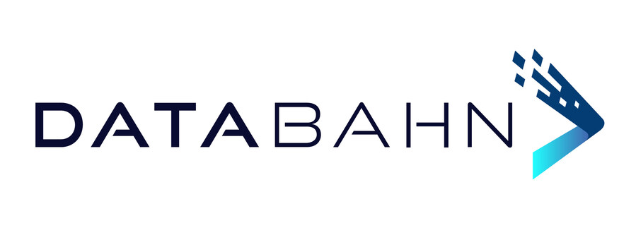

Executive Summary
텍사스 댈러스의 스타트업 데이터베인(DataBahn)이 7월 30일 시리즈B로 4,000만 달러를 받았다. 인사이트 파트너스가 주도했고, 2025년 6월 시리즈A 1,700만 달러에 이은 라운드다. 이 회사는 더 똑똑한 모델을 만들지 않는다. 로그·이벤트·메트릭을 쏟아내는 600개 넘는 소스와, 그 데이터를 받아 쓰는 도구들 사이에 앉아 데이터를 수집하고 형태를 맞추고 목적지로 흘려보내는 파이프라인을 판다.
달라진 것은 그 데이터를 받아 가려고 줄을 선 쪽이다. 전통적으로 텔레메트리를 소비한 건 보안 플랫폼(SIEM)과 데이터 웨어하우스였는데, 이제 AI 에이전트와 코파일럿이 같은 줄에 합류했다. 다만 에이전트는 원본 로그가 아니라 판단하고 행동하는 데 쓸 맥락을 원한다. 데이터베인이 스스로를 "에이전틱 데이터 제어 평면"이라 부르는 이유가 여기에 있다.
이 글은 이 4,000만 달러가 가리키는 방향을 본다. 데이터를 다루는 독자에게 이 투자는 하나의 질문으로 번역된다. AI-레디 데이터란 한 번 정제하고 끝나는 배치 작업의 산출물인가, 아니면 매 순간 정규화하고 라우팅하며 기록해야 하는 상시 가동 인프라 계층인가.
주요 수치
아래 네 숫자가 이 라운드의 배경을 압축한다. 시리즈B 규모, 하나의 파이프라인이 잇는 소스의 수, 지난 1년 매출 증가 폭, 그리고 도입을 검토한 고객이 실제 계약으로 이어진 비율이다.
$40M
시리즈B
Insight Partners 주도, 누적 $59M
600+
연결 소스
로그·이벤트·메트릭을 단일 파이프라인으로
400%+
매출 전년 대비 성장
NRR 180% · 고객 이탈 0
97%
PoC 승률
도입 검토가 계약으로 이어진 비율
텔레메트리 줄에 에이전트가 합류했다
먼저 거래부터 보자. 데이터베인은 2024년 댈러스에서 세워진 회사다. 이번 시리즈B 4,000만 달러는 인사이트 파트너스가 이끌었고, 포지포인트 캐피털·GTM 캐피털·S3 벤처스가 참여했다. 2025년 6월 포지포인트 주도 시리즈A 1,700만 달러에 이은 라운드로, 누적 조달액은 5,900만 달러가 됐다. 회사는 이 돈으로 연구개발을 넓히고, 지금까지 포춘 100 규모의 대기업에 몰려 있던 고객층을 중견기업으로 확장하겠다고 밝혔다.

데이터베인이 하는 일은 한 문장으로 요약된다. 로그와 이벤트, 메트릭을 만들어 내는 600개 넘는 소스와, 그것을 받아 쓰는 도구 사이에 앉아 데이터를 수집(ingest)하고 정규화(normalize)하고 라우팅(route)한다. 목적지가 필요로 하지 않는 정보는 도중에 걷어낸다. 회사는 이 자리를 "에이전틱 데이터 제어 평면(agentic data control plane)"이라 부르며, 어떤 소스든 어떤 목적지든 어떤 모델이든 특정 벤더에 묶이지 않는 중립성을 세일즈 포인트로 내세운다.
이 자리가 왜 지금 값이 매겨졌는지는 목적지 쪽 변화에서 읽힌다. 지금까지 텔레메트리를 받아 간 건 보안 플랫폼과 분석 도구였다. 그런데 이제 AI 에이전트와 코파일럿, 자율 애플리케이션이 같은 줄에 서서 데이터를 요구한다. 회사가 데이터를 수집하고 이동하고 저장하고 처리하는 비용은 클라우드 요금과 스토리지, 추론 비용, 데이터량 증가가 겹치며 동시에 오르는 중이다. "모든 걸 어디로든 옮기던" 낡은 아키텍처로는 감당이 안 되는 지점에서, 데이터를 걸러 알맞은 형태로만 흘려보내는 계층에 수요가 몰린다.
데이터베인이 파는 것은 새 데이터가 아니라 데이터가 지나가는 길목이다. 소스가 600개로 늘고 목적지에 에이전트가 더해질수록, 그 사이에서 형태를 맞추고 흐름을 정하는 자리의 값이 오른다. 가치는 데이터의 양이 아니라 위치에서 나온다.
에이전트가 원하는 건 맥락이다
여기서 한 가지를 구분해야 한다. SIEM이 원하던 데이터와 에이전트가 원하는 데이터는 성격이 다르다. 보안 분석 도구는 원본 로그를 최대한 많이 쌓아 두고 사후에 뒤진다. 반면 에이전트는 답만 내놓는 게 아니라 그 답으로 무언가를 실행한다. 그래서 원본 로그의 더미가 아니라, 판단하고 행동하는 데 곧바로 쓸 수 있는 맥락을 필요로 한다. 최신성, 구조화, 그리고 그 데이터가 믿을 만하다는 근거가 갖춰진 상태여야 한다.
데이터베인이 이 맥락을 만드는 방식은 자동화에 있다. 회사의 "크루즈 AI(Cruz AI)"는 사람이 손으로 하던 통합·파싱 규칙 설정을 대신하는 에이전틱 데이터 엔지니어다. 들어오는 데이터의 스키마를 지켜보다가 소스의 포맷이 바뀌면 이를 감지하고, 업데이트된 파서와 매핑을 스스로 만들어 사람에게 승인을 받는다. 사람이 최종 결정을 쥐는 구조(human-in-the-loop)이되, 포맷이 하루가 다르게 바뀌는 600개 소스를 사람 손으로 일일이 따라가는 부담을 덜어 준다.
CEO 난다 산타나가 남긴 한 문장이 이 제품의 전제를 압축한다. "AI는 그것이 이해할 수 있는 엔터프라이즈 데이터만큼만 좋다." 모델이 아무리 뛰어나도, 그 모델에 닿는 데이터가 뒤엉킨 원본 로그라면 판단의 품질은 그 수준에 갇힌다. 제어 평면은 그래서 단순한 배관을 넘어, 에이전트가 무엇을 볼 수 있는지 정하고 데이터가 어떻게 변경·라우팅됐는지 기록하는 거버넌스 기능까지 겸한다. 규제 산업에서 특히 무겁게 다뤄지는 지점이다.
배치 작업에서 상시 배관으로
여기서부터가 데이터를 다루는 사람에게 진짜 중요한 대목이다. 지금까지 많은 조직이 "AI-레디 데이터"를 하나의 프로젝트로 여겨 왔다. 데이터를 한 번 모아 정제하고, 라벨을 붙이고, 품질을 맞춰 두면 준비가 끝난다고 봤다. 배치 작업의 사고방식이다. 그런데 에이전트가 매 순간 데이터를 요구하고 그것으로 곧장 행동하기 시작하면, 데이터 품질은 한 번 끝내는 산출물이 아니라 계속 돌아가는 상태가 된다.
이 이동은 세 가지 일의 책임 소재를 바꾼다. 첫째, 프로버넌스는 정제 시점에 한 번 남기는 메타데이터가 아니라, 데이터가 변경되고 라우팅될 때마다 이어지는 기록이 된다. 둘째, 정규화는 미리 설계해 고정하는 스키마가 아니라, 소스의 포맷이 바뀔 때마다 감지하고 다시 맞추는 일이 된다. 셋째, 라우팅은 적재 목적지를 미리 정해 두는 설정이 아니라, 어느 도구가 지금 어떤 형태를 필요로 하는지에 따라 실시간으로 갈래를 정하는 판단이 된다.
데이터베인의 고객 사례가 이 전환을 구체적으로 보여 준다. MVB 뱅크의 CISO 패리시 거널스는 규제 요건과 감사 통제, 검증 프로세스를 하나의 응집된 솔루션으로 묶어 비용을 낮추고, 인력을 거버넌스와 오버사이트 업무로 돌릴 수 있게 됐다고 밝혔다. 캐나다 연금투자위원회(CPPIB)의 보안 아키텍처 리드 리카르도 헨리는 과거엔 새 로그 소스 하나를 온보딩하는 데도 커스텀 통합과 상당한 엔지니어링 시간이 들었고, 핵심 시스템이 실제로 로그를 보내고 있는지조차 확인할 길이 없었다고 했다. 데이터베인이 표준화되고 반복 가능한 온보딩 방식을 제공하면서 커버리지 공백을 찾아내기 쉬워졌다는 것이다.
데이터 품질이 배치에서 런타임으로 옮겨가면, 그것은 프로젝트가 아니라 운영이 된다. 한 번 끝내는 정제가 아니라 계속 지켜보고 계속 고치는 일이다. 그 순간 프로버넌스·정규화·라우팅은 데이터 팀이 분기마다 처리하는 과제가 아니라, 누군가가 상시로 책임지는 인프라 계층이 된다.
정말 새로운 계층인가, 크리블과의 경계
여기서 정직한 의문 하나를 짚고 가야 한다. "에이전틱 데이터 제어 평면"이 정말 새로운 레이어인가, 아니면 기존 텔레메트리 파이프라인을 다시 이름 붙인 것인가. 이 질문은 업계가 데이터베인에 계속 던지는 것이기도 하다. 데이터를 수집하고 라우팅하고 저장하는 회사는 이미 있다. 대표적으로 크리블(Cribl)은 2018년 설립돼 IT·보안 데이터 관리의 기존 강자로 자리 잡았고, 2024년 8월 시리즈E에서 3억 1,900만 달러를 유치해 누적 조달액이 7억 달러를 넘겼다. 데이터베인보다 훨씬 두꺼운 자본을 가진 인접 카테고리의 선두다.
경쟁의 지형도 아직 정리되지 않았다. 텔레메트리 관리·위협 탐지를 다루던 독립 경쟁사 옵저보 AI(Observo AI)는 2025년 9월 센티넬원(SentinelOne)에 인수되며 독립 카테고리에서 이탈했다. 스플렁크(Splunk)와 대형 클라우드·보안 벤더도 모두 데이터를 라우팅하고 저장한다. 그래서 데이터베인은 "에이전틱 데이터 제어 평면"이 재브랜딩이 아니라 실재하는 별도 카테고리임을 스스로 증명해야 하는 처지다. 회사가 벤더 중립·크로스 플랫폼 독립성을 유독 앞세우는 것은 이 경계선에서의 차별화 시도로 읽힌다.
경계가 흐릿하다는 사실 자체는 이 카테고리가 아직 형성 중이라는 신호다. 다만 형성 중이라는 것과 실체가 없다는 것은 다르다. 소비자 쪽에 에이전트가 새로 합류하면서 "데이터를 어떤 형태로, 언제, 누구에게 보낼지"를 실시간으로 결정하는 부담이 실제로 커졌고, 그 부담을 전담하는 계층에 자본이 몰리고 있다는 사실은 남는다. 이름이 크리블의 확장이 되든 데이터베인의 신규 카테고리가 되든, 그 자리에 값이 매겨지고 있다는 흐름은 분명하다.
데이터 품질 조직은 무엇을 갖춰야 하나
한 발 떨어져서 보면, 데이터베인의 4,000만 달러는 개별 회사의 성공담을 넘어선 신호다. 여러 업계 분석은 기업 다수가 AI 에이전트를 실험했지만 측정 가능한 가치로 확장한 비율은 아직 낮다고 진단한다. 그 병목으로 반복해 지목되는 것이 모델의 추론 능력이 아니라 데이터 품질과 거버넌스다. 에이전트를 몇 개 더 붙인다고 성과가 나지 않는 이유가 여기에 있다. 각 에이전트에게 알맞은 형태의 깨끗한 데이터가 제때 도착하지 않으면, 아무리 똑똑한 모델도 뒤엉킨 입력 앞에서 멈춘다.
"제어 평면(control plane)"이라는 표현이 여러 곳에서 동시에 등장하는 것도 우연이 아니다. 가트너는 에이전트 실행 계층 위에 앉아 거버넌스와 성능, 가치가 수렴하는 중앙 허브로서 에이전트 관리 플랫폼(AMP) 개념을 제시했고, 마이크로소프트의 에이전트 관리 제품도 어디서 실행되든 에이전트를 발견하고 보안하는 제어 평면 역할을 표방한다. 데이터베인이 겨눈 것은 그중에서도 에이전트가 먹는 데이터 자체를 다루는 층이다. 앞서 자본이 몰렸던 에이전트의 실행 권한을 통제하는 계층과 나란히, 이제 에이전트에게 들어가는 데이터를 통제하는 계층까지 인프라로 굳어지는 중이다.
페블러스가 AI-레디 데이터를 말해 온 문제의식도 정확히 이 자리에 있다. 레디는 한 번 도달하면 끝나는 상태가 아니다. 소스의 포맷이 바뀌고, 목적지가 요구하는 형태가 달라지고, 새 에이전트가 새 맥락을 요구할 때마다 데이터는 다시 정규화되고 다시 라우팅되고 다시 기록되어야 한다. 데이터 품질 조직에 필요한 것은 분기마다 데이터를 정제하는 배치 파이프라인 팀이 아니라, 데이터가 흐르는 길목을 상시로 지켜보며 프로버넌스와 정규화와 라우팅을 운영으로 다루는 역량이다. 데이터베인의 라운드는 그 역량에 값이 매겨지기 시작했다는 신호다. 모델은 이미 비싸졌고, 모델에 닿는 데이터를 알맞게 흘려보내는 일이 이제 막 비싸지기 시작했다.
참고문헌
업계 보도
- 1.SiliconANGLE. (2026). "DataBahn raises $40M as AI agents queue up for enterprise telemetry." SiliconANGLE.
- 2.TheNextWeb. (2026). "The unsexy layer AI agents actually need: DataBahn raises $40m to sell it." TheNextWeb.
- 3.CB Insights. (2026). "Compare DataBahn vs Observo AI." CB Insights.
공식 자료
- 4.PR Newswire. (2026). "DataBahn Raises $40 Million Series B Led by Insight Partners." 보도자료.
- 5.Gartner. (2026). Agent Management Platform(AMP) — 에이전트 실행 계층 위의 운영 제어 평면 개념.
- 6.McKinsey. (2026). 기업의 AI 에이전트 확장 성과 관련 조사 — 실험 대비 측정 가능한 가치로의 확장 비율이 낮은 원인으로 데이터 품질·거버넌스 지목.